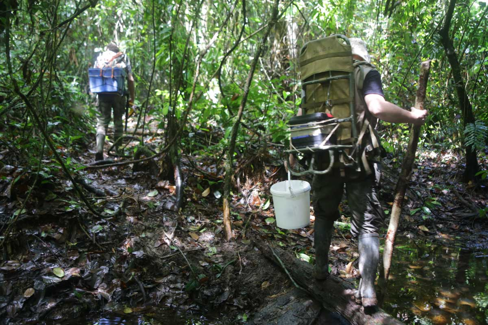
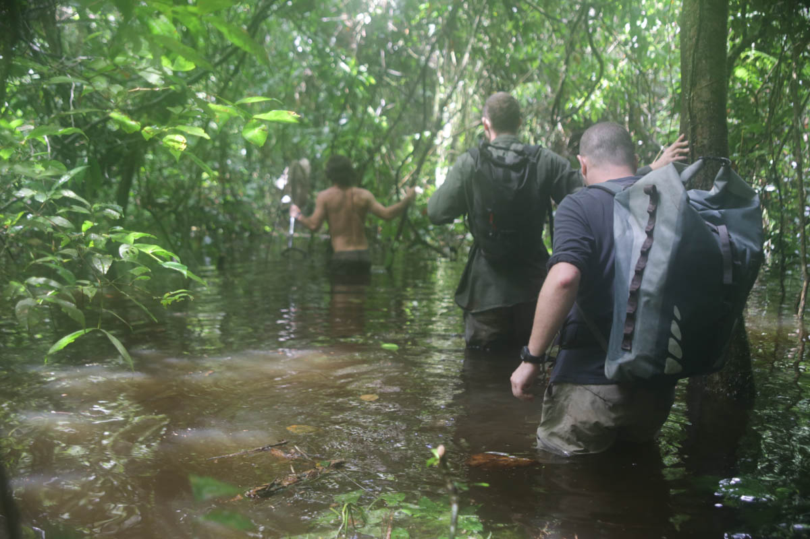
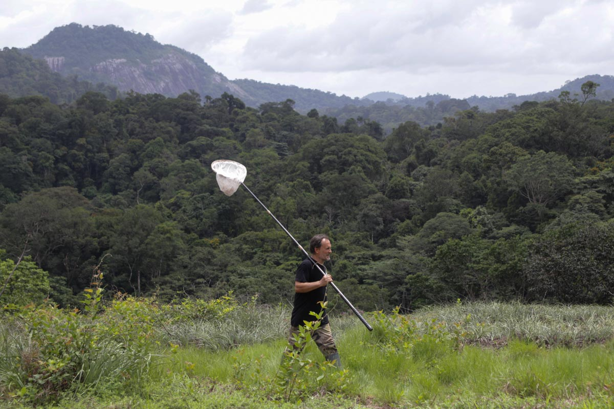
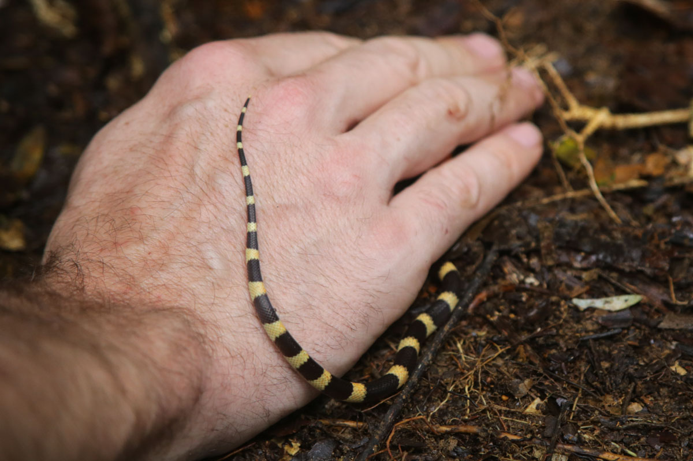

2° 14’ nord, 54° 27’ ouest, indique le GPS. Loin de tout, nous dit-on. Mais pourquoi ici justement ? Pourquoi dresser un inventaire de la biodiversité dans ce coin perdu de Guyane, et pas ailleurs ? « Depuis quelques années déjà, nous réfléchissions à intervenir sur un territoire d’outre-mer, il y avait une certaine logique pour un programme franco-français comme le nôtre », explique Olivier Pascal, responsable du programme biodiversité de Pro-Natura, l’ONG qui codirige les expéditions « La planète revisitée » avec le Muséum national d’histoire naturelle. « Ces expéditions ont comme point commun l’acquisition de connaissances nouvelles dans des endroits riches en termes de biodiversité et encore peu étudiés, et la Guyane répondait à ces critères », reprend le responsable de ce volet terrestre en Guyane.
Pour apporter une vraie valeur ajoutée aux campagnes de prospection déjà menées sur le département, la première étape a consisté à interroger sur un point les nombreux scientifiques, naturalistes ou ONG locaux : si vous pouviez mener une importante opération de prospection en Guyane, où iriez-vous ? La réponse fut unanime : le Grand Sud. « La région reste très difficilement accessible, et le taux de collecte est donc beaucoup plus faible que dans le reste de la Guyane. De par sa situation géographique, le Grand Sud présente également des faciès forestiers très différents », décrit Olivier Pascal. Devant l’immensité de cette zone, il fallait ensuite affiner la localisation de l’expédition. Là, ce furent les inselbergs, ces dômes de pierre émergeant de la forêt, qui intéressèrent les scientifiques. Les plus gros se situant à l’ouest du département, le massif du Mitaraka et ses environs s’imposèrent rapidement.
-

Marche boueuse sur l’un des quatre layons partant du camp.
-

Après de fortes pluies, la rivière est sortie de son lit, rendant sa traversée difficile.
Un premier repérage est effectué en juin 2014. Le survol de la zone permet alors d’identifier plusieurs affleurements rocheux permettant de poser un hélicoptère. Mi-janvier, sept militaires sont déposés avec un objectif : trouver une zone où établir un camp – un espace relativement plat et proche d’un point d’eau – et y ouvrir une zone d’atterrissage. Une semaine plus tard, l’équipe est remplacée par huit agents de l’ONF et du Parc amazonien de Guyane, chargés d’ouvrir 25 kilomètres de sentier autour du camp. Enfin, début février, ce sont six personnes qui investissent les lieux pour construire ce qui sera le camp de base de l’expédition, tandis que cinq tonnes et demie de matériel scientifique, nourriture et outils sont acheminés sur place.
Cette petite équipe est menée par Serge Fernandez, entomologiste et ancien décorateur pour le cinéma reconverti dans la construction de carbets (abris de bois sans mur) sur des sites isolés. « Le plus difficile à trouver a été l’espace pour le réfectoire, douze mètres sur six environ, la plus grosse construction du camp capable d’accueillir plus de trente personnes », confie-t-il. Pendant qu’une partie de l’équipe s’attelle à bâtir ce premier carbet, les autres débitent les troncs abattus lors de l’ouverture de la zone de pose afin de confectionner des planches destinées à construire tables, bancs et étagères. Des éléments indispensables pour les quatre grands carbets de travail dédiés au tri des échantillons récoltés. Enfin, quatre carbets dortoirs pouvant accueillir chacun six hamacs viennent compléter ce travail titanesque de construction. Le tout, en moins de deux semaines…
-

A une heure et demie de marche du camp, une savane-roche offre un superbe point de vue.
« Il y a eu également une foule de bricoles à faire, souligne Serge Fernandez. Electrifier certains carbets, installer une pompe pour ramener l’eau de la rivière, construire une infirmerie et des toilettes sèches… En tout, les constructions du camp couvrent entre 950 et 1 000 mètres carrés de surface. » Une prouesse saluée par tous les scientifiques lors de l’arrivée sur le camp, étonnés de voir émerger sous la canopée un véritable petit village, avec ses quartiers et ses rues, en pleine forêt vierge, sans âme qui vive à des lieux à la ronde. Un confort « grand luxe » qui facilite le travail de collecte effectué sur place dans des conditions souvent rudes. Difficile, à l’heure actuelle, d’imaginer que tout ceci aura disparu dans quelques mois, englouti par la forêt amazonienne.
Yann Chavance
-

Capture d’un jeune Oxyrhopus occipitalis, une petite couleuvre typique du bassin amazonien.